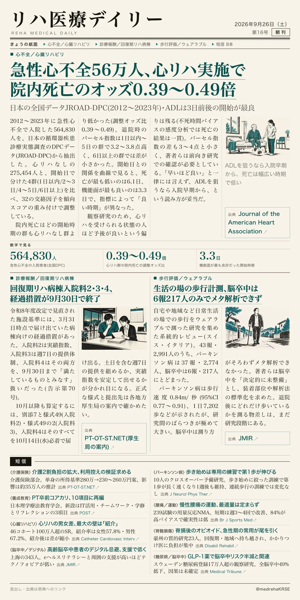
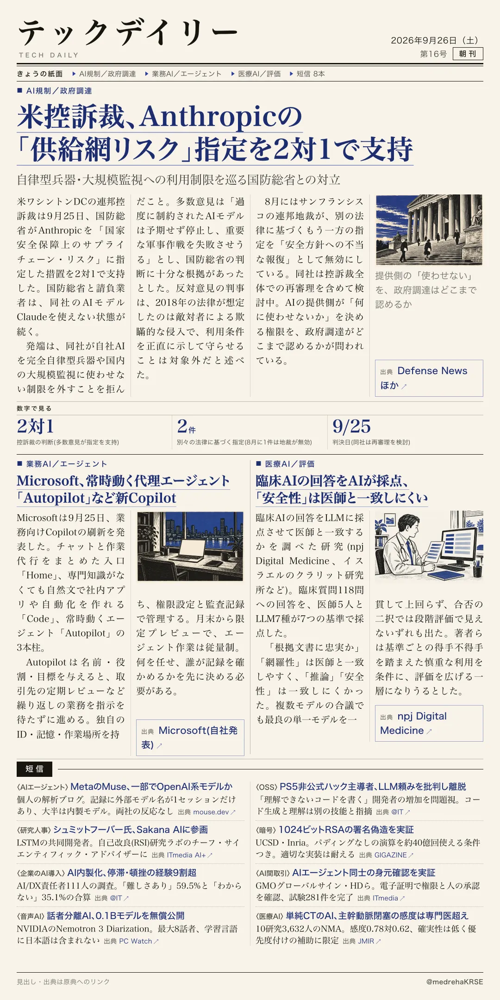

リハ医療デイリー
急性心不全56万人、心リハ実施で院内死亡のオッズ0.39〜0.49倍
日本の全国データJROAD-DPC(2012〜2023年)・ADLは3日前後の開始が最良
急性心不全で入院した564,830人を、心リハなし275,454人と開始日の4区分(1日以内/2〜3日/4〜5日/6日以上)で比べた。32の交絡因子を傾向スコアの重み付けで調整している。

テックデイリー
米控訴裁、Anthropicの「供給網リスク」指定を2対1で支持
自律型兵器・大規模監視への利用制限を巡る国防総省との対立
ワシントンDCの連邦控訴裁は9月25日、国防総省がAnthropicを国家安全保障上のサプライチェーン・リスクに指定した措置を支持した。国防総省と請負業者はClaudeを使えない状態が続く。
